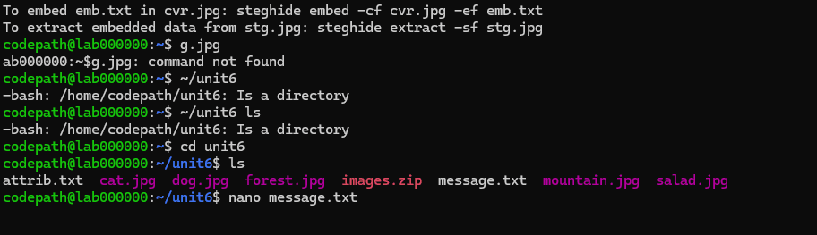

In this tutorial, we'll walk through the steps of embedding and extracting hidden messages within images using the steghide tool. Steganography allows for hidden information to be embedded in various media formats, providing a discreet way of communication.
To embed a hidden message (emb.txt) within an image (cvr.jpg), use the following command:
steghide embed -cf cvr.jpg -ef emb.txt
steghide embed showing embedded data.To verify the embedded data in the image, use the command:
steghide info cat.jpg
steghide info command showing details of the hidden data.To extract the embedded message from the image, use:
steghide extract -sf cat.jpg -xf embeddedmessage.txt
steghide extract command.Once the message is extracted, you can view it with the following command:
cat embeddedmessage.txt
cat embeddedmessage.txt.This GIF summarizes the entire process, from embedding to extracting the hidden message.
